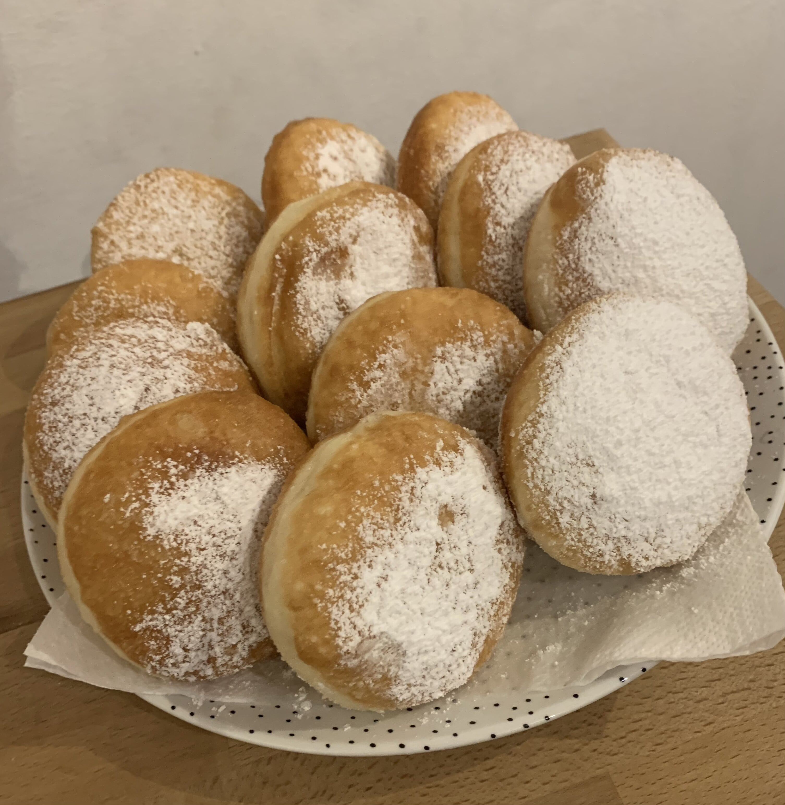

Donuts

Description:
Homemade childhood donut recipe. they come out fluffy donuts that melt in your mouth, you can't resist not
eating them. They can be served plain or you can fill them with cream, jam, or even glaze.
Ingredients:
- Flour 550 g
- Water 310 g
- Yeast 16 g
- Eg 1
- Sugar 60 g
- Butter 30 g
- Salt 5 g
Steps:
- In stand mixer add water with yeast and sugar mixed, let it activate.
- Add flour and eg, mix for about 5 min.
- Add butter in small pieces, mix until well incorporated.
- Add salt and mix for about 5 min
- Make the dough into a ball, put it in a large bowl, cover the bowl.
- Let the dough rise for 1-2 hours, until it doubles in volume.
- Put the dough on a table sprinkled with flour,
divide the dough into balls of 40 - 45 g each,
put them on a covered tray, let them rise for 40 - 50 min, at room temperature
- Heat your oil at 170-175 C, and fry the donuts about 1-2 minutes per side. Once they are cool enough,
roll them in powder sugar.